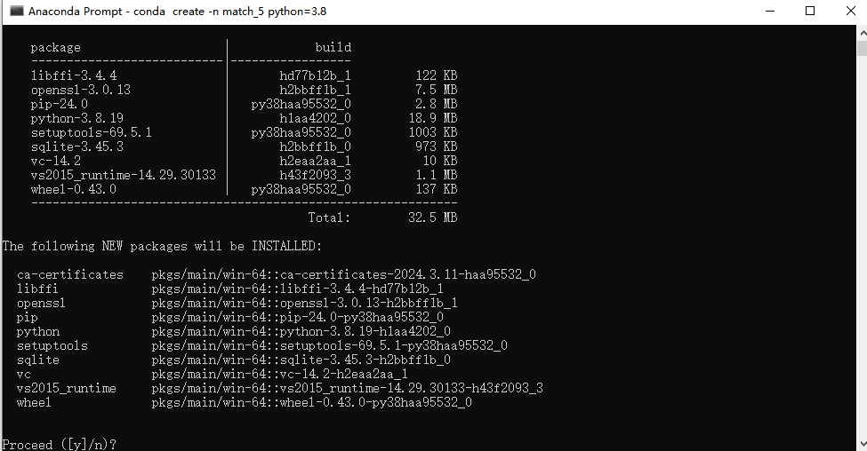
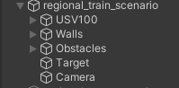

平台使用文档
1. Unity3D环境搭建
1.1 下载UnityHub
- 官网链接：https://unity.cn/releases

- 注册账号并登录
- 申请个人许可证（许可证到期后可免费延期）
1.2 下载Unity
- 从官网中找到版本为2020.3.10f1c1的Unity，选择从Hub下载
1.3 加载工程
2. Anaconda环境搭建
2.1 下载并安装Anaconda
2.2 创建虚拟环境
- 打开命令行窗口

- 新建虚拟环境，命令为
conda create -n match python=3.8
-
输入上述命令后按回车键，出现如下画面
-
按y键进行安装
- 安装完成后，可通过
conda env list命令查看已有的环境 - 通过
conda activate 环境名激活创建的环境
conda activate match
- 通过
pip list命令可查看当前环境已安装package
2.3 安装Pytorch
-
官网链接：https://pytorch.org/
-
如果电脑没有GPU，则安装CPU版本的Pytorch
- 如果电脑有GPU，可通过
nvidia-smi命令查看支持的cuda版本，安装对应的Pytorch
pip install torch==2.0.1 torchvision==0.15.2 torchaudio==2.0.2 --index-url https://download.pytorch.org/whl/cu118
2.4 安装ML-Agents包
pip install mlagents==0.30.0
2.5 安装stable-baselines3
pip install stable-baselines3==2.1.0
2.6 调整其余包版本
若运行python脚本时提示某个package版本过高或过低，可手动安装符合要求的版本
pip install 包名==包版本
2.7 参考环境配置
Package Version
-------------------------- ------------
absl-py 2.1.0
attrs 23.2.0
cachetools 5.3.3
cattrs 1.5.0
certifi 2022.12.7
charset-normalizer 2.1.1
cloudpickle 3.0.0
contourpy 1.1.1
cycler 0.12.1
Farama-Notifications 0.0.4
filelock 3.9.0
fonttools 4.51.0
google-auth 2.29.0
google-auth-oauthlib 1.0.0
grpcio 1.62.1
gym 0.26.2
gym-notices 0.0.8
gymnasium 0.29.1
h5py 3.11.0
idna 3.4
importlib_metadata 7.1.0
importlib_resources 6.4.0
Jinja2 3.1.2
kiwisolver 1.4.5
Markdown 3.6
MarkupSafe 2.1.3
matplotlib 3.7.5
mlagents 0.30.0
mlagents-envs 0.30.0
mpmath 1.3.0
networkx 3.0
numpy 1.21.2
oauthlib 3.2.2
packaging 24.0
pandas 2.0.3
PettingZoo 1.15.0
pillow 10.2.0
pip 23.3.1
protobuf 3.20.2
pyasn1 0.6.0
pyasn1_modules 0.4.0
pyparsing 3.1.2
pypiwin32 223
python-dateutil 2.9.0.post0
pytz 2024.1
pywin32 306
PyYAML 6.0.1
requests 2.28.1
requests-oauthlib 2.0.0
rsa 4.9
setuptools 68.2.2
Shimmy 1.1.0
six 1.16.0
stable-baselines3 2.1.0
sympy 1.12
tensorboard 2.14.0
tensorboard-data-server 0.7.2
torch 2.0.1+cu118
torchaudio 2.0.2+cu118
torchvision 0.15.2+cu118
typing_extensions 4.8.0
tzdata 2024.1
urllib3 1.26.13
Werkzeug 3.0.2
wheel 0.41.2
zipp 3.18.1
3. 开始运行
- 确保已成功配置Unity工程和python虚拟环境
3.1 手动控制
- 单击编辑器上方的运行按钮
- 使用键盘控制无人艇运动
- W 前进
- A 左转
- D 右转
3.2 强化学习训练
- 使用Pycharm或VScode等编辑器创建python脚本
- 粘贴下列代码
from mlagents_envs.environment import UnityEnvironment as UE
from mlagents_envs.envs.unity_gym_env import UnityToGymWrapper
from stable_baselines3 import PPO
UniytEnv = UE()
env = UnityToGymWrapper(UniytEnv,flatten_branched=True, allow_multiple_obs=False)
model = PPO(
'MlpPolicy',
env=env,
batch_size=64,
gamma=0.999,
gae_lambda=0.98,
verbose=1,
device="cuda",
tensorboard_log="./tb_logs/usv/",
)
model.learn(
total_timesteps=500000,
)
model.save("ppo_navigation_policy")
- 选择第2节创建的虚拟环境运行脚本
- 单击unity编辑器的运行按钮，开始训练
3.3 使用tenserboard查看训练效果
- 打开命令行窗口，激活第2节创建的虚拟环境
- 进入训练日志的生成目录，如“./tb_logs/usv/”
- 输入下列命令
tensorboard --logdir 文件夹名(如PPO_1)
- 浏览器打开网址，默认为http://localhost:6006/

3.4 加载训练模型
- 使用Pycharm或VScode等编辑器创建python脚本
- 粘贴下列代码
from mlagents_envs.environment import UnityEnvironment as UE
from mlagents_envs.envs.unity_gym_env import UnityToGymWrapper
from stable_baselines3 import PPO
episode = 0
rew_total = 0
rew_per_ep = 0
step = 0
def show_ep():
print("Episode: ", episode)
print("Step: ", step)
print("Reward: ", round(rew_per_ep, 4))
print("Average of Reward: ", round(rew_total / episode, 4))
UnityEnv = UE()
env = UnityToGymWrapper(UnityEnv,flatten_branched=True, allow_multiple_obs=False)
model = PPO.load("ppo_navigation_policy", env=env)
obs = env.reset()
while True:
action, _states = model.predict(obs)
obs, rewards, dones, info = env.step(action)
step += 1
rew_total += rewards
rew_per_ep += rewards
if dones:
episode += 1
show_ep()
step = 0
rew_per_ep = 0
obs = env.reset()
- 选择第2节创建的虚拟环境运行脚本
- 单击unity编辑器的运行按钮，查看训练效果
3.5 切换场景
注意：训练场景同一时刻只能开启一个，否则无法打包训练环境
以区域赛训练场景切换至国赛训练场景为例：
- 选中Hierarchy中的regional_train_scenario，将Inspector窗口中的对勾取消

- 选中Hierarchy中的national_train_scenario，将Inspector窗口中的对勾勾选
4. 工程详解
4.1 基础知识
- 强化学习
强化学习是机器学习的一个重要分支。它研究的问题是智能体在未知的环境中，如何优化自身的决策、采取最优行为来极大化奖励的期望值。

强化学习将世界分为两部分，智能体(Agent)和环境(Environment)。智能体从环境中感知到当前时刻的状态S_t和奖励R_t，之后根据感知信息进行决策并采取动作A_t，动作被执行后影响环境进入下一个状态。智能体继续获得下一时刻的状态S_{t+1}和奖励R_{t+1}。智能体的目的是获得的奖励尽可能多。
- 马尔可夫决策过程(MDP)
马尔可夫决策过程可以用五元组表示 <S,A,P,R,\gamma> ，其中，S为状态集合，A为动作集合，P为状态转移概率，R为奖励函数，\gamma为折扣因子。
- ML-Agents
ML-Agents是Unity提供的用于强化学习训练的功能包。借助该功能包，可以将自定义的Unity环境建模为马尔可夫决策过程，然后使用Gym Wrapper转化为强化学习训练环境，进而通过与Python的通信实现神经网络的训练。详细介绍可查看官方文档：https://github.com/Unity-Technologies/ml-agents
本工程基于ML-Agents框架，搭建了Unity水域场景，定义了马尔可夫决策过程，并将场景包装为Gym式训练环境

4.2 Unity场景
4.2.1 区域赛训练场景
如下图所示，区域赛训练场景为10m*10m大小的方形区域，对应Hierarchy窗口中“regional_train_scenario”

场景包含：
- 无人艇(USV100)
- 四周的墙体(Walls)
- 障碍物(Obstacles)
- 目标点(Target)
- 相机(Camera)
4.2.2 无人艇(智能体)
无人艇上搭载了强化学习训练必要的脚本控件和激光雷达传感器
- Behavior Parameters
Behavior Name：行为名称Vector Observation->Space Size：向量观测大小，与训练脚本中状态空间设置有关(见4.2.3 收集观测函数，1+1+18=20)；二者不一致，编译器会给出警告Actions->Continuous Actions：连续动作空间数量；本工程使用离散动作空间，因此为0Actions->Discrete Branch：1个离散动作空间，大小为4，对应4.2.3 控制函数
- Regional_Train：训练脚本
Max Step：回合最大步数Target：目标点

- Decision Requester
Decision Period：智能体探索多少步后接收一次决策

- 激光雷达：USV100搭载了一个单线激光雷达，测距范围为0-15m，水平视场角为360°，角分辨率为1°，可用于感知周围环境。具体使用方法见 4.2.3 收集观测函数
4.2.3 区域赛训练脚本
基于ML-Agents提供的Agent基类实现，对应Project窗口中Assets/Scripts/Regional_Train，已挂载到场景中的智能体(USV100)上
下面给出详细解释
- 初始化函数：训练开始时执行，用于初始化操作
public override void Initialize()
{
rBody = GetComponent<Rigidbody>(); //获取刚体控件
Lidar = GetComponentInChildren<VelodyneSensor>(); //获取激光雷达控件
}
- 回合起始函数：每个回合开启时执行，用于回合的初始化
public override void OnEpisodeBegin()
{
rBody.velocity = Vector3.zero; //无人艇速度置0
transform.localPosition = new Vector3(GetRandomPos().x, 0.5f, GetRandomPos().z); //随机设置无人艇位置
Target.transform.localPosition = GetRandomPos(); //随机设置目标点位置
transform.localRotation = Quaternion.Euler(new Vector3(0.0f, 0.0f, 0.0f)); //设置无人艇朝向
}
- 收集观测函数：以向量观测的形式，定义状态空间；状态空间大小对应
Behavior Parameters->Vector Observation->Space Size
public override void CollectObservations(VectorSensor sensor)
{
var localVelocity = transform.InverseTransformDirection(rBody.velocity); //获取无人艇速度
sensor.AddObservation(localVelocity.magnitude); //将无人艇速度大小加入状态空间，1维向量
sensor.AddObservation(Vector3.Distance(Target.transform.localPosition, transform.localPosition)); //观测距目标点的距离，1维向量
Lidar.CompleteJob(); //激光雷达完成检测
float[] lidar_param = Enumerable.Range(0, Lidar.distances.Length / 20)
.Select(i => Lidar.distances.Skip(i * 20).Take(20).Min())
.ToArray(); //将激光雷达各个射线的检测值分为20组，每组取一个最小值，加入lidar_param数组中
for (int i = 0; i < lidar_param.Length; i++)
{
sensor.AddObservation(lidar_param[i]); //观测lidar_param，18维向量
}
}
- 动作反馈函数：执行动作，同时可设置奖励函数
public override void OnActionReceived(ActionBuffers actionBuffers)
{
MoveAgent(actionBuffers.DiscreteActions); //执行动作
AddReward(-1 * MaxRew / MaxStep); //时间惩罚
if (Vector3.Distance(Target.transform.localPosition, transform.localPosition) < 1.0f)
{
AddReward(MaxRew);
EndEpisode();
} //当距离目标点的距离小于1的时候，认为到达目标点，给予正奖励并结束当前回合
}
- 控制函数：定义无人艇的运动方式，此部分无需改动
public void MoveAgent(ActionSegment<int> act)
{
var dirToGo = Vector3.zero;
var rotateDir = Vector3.zero;
var action = act[0];
switch (action) //离散动作空间，共四个动作：0为静止，1为前进，2为右转，3为左转
{
case 1:
dirToGo = transform.forward * 1f;
break;
case 2:
rotateDir = transform.up * 1f;
break;
case 3:
rotateDir = transform.up * -1f;
break;
}
transform.Rotate(rotateDir, Time.deltaTime * 30f); //转向
rBody.AddForce(dirToGo * force, ForceMode.VelocityChange); //前进
if (rBody.velocity.sqrMagnitude > 1.0f) //限制最大速度为1.0
{
rBody.velocity = rBody.velocity.normalized;
}
}
- 启发函数：用于键盘控制，手动检测动作空间是否符合预期，无需改动
public override void Heuristic(in ActionBuffers actionsOut)
{
var discreteActionsOut = actionsOut.DiscreteActions;
discreteActionsOut[0] = 0;
if (Input.GetKey(KeyCode.D))
{
discreteActionsOut[0] = 2;
}
else if (Input.GetKey(KeyCode.W))
{
discreteActionsOut[0] = 1;
}
else if (Input.GetKey(KeyCode.A))
{
discreteActionsOut[0] = 3;
}
}
- 碰撞检测函数：检测是否与障碍物发生碰撞，若碰撞则给予负奖励并结束本回合，无需改动
void OnTriggerEnter(Collider other)
{
if (other.gameObject.CompareTag("Obstacles"))
{
AddReward(-1 * MaxRew);
EndEpisode();
}
if (other.gameObject.CompareTag("Walls"))
{
AddReward(-1 * MaxRew);
EndEpisode();
}
}
- 随机位置生成函数：用于随机无人艇和目标点的位置，无需改动
public Vector3 GetRandomPos()
{
float x = Random.Range(-4.0f, 4.0f);
float z = Random.Range(-4.0f, 4.0f);
Vector3 randomSpawnPos = new Vector3(x, 0.05f, z);
bool goal_ok = false;
while (goal_ok == false)
{
x = Random.Range(-4.0f, 4.0f); //随机生成x坐标
z = Random.Range(-4.0f, 4.0f); //随机生成z坐标
randomSpawnPos = new Vector3(x, 0.05f, z);
goal_ok = Check_Pos(randomSpawnPos.x, randomSpawnPos.z); //检测是否与障碍物位置重叠，若重叠则重新生成
}
return randomSpawnPos;
}
- 检测位置函数：检测新生成的位置是否与障碍物重叠，无需改动
public bool Check_Pos(float x, float z)
{
bool goal_ok = true;
if (x > 1 && x < 3 && z < 2.7 && z > -0.2)
{
goal_ok = false;
}
else if (x > -4.2 && x < -1.7 && z < -0.7 && z > -3.7)
{
goal_ok = false;
}
return goal_ok;
}
4.2.4 区域赛测试场景
对应Hierarchy窗口中“regional_test_scenario”，与区域赛训练场景一致
无人艇行进过程中会绘制黄色条带状路径，回合更新后重新绘制，同时在unity端输出上一回合路径的长度。
4.2.5 区域赛测试脚本
- 与区域赛训练脚本基本一致，增加了路径显示功能
- 无需修改
4.2.6 区域赛任务描述
在区域赛训练场景中，训练无人艇从随机位置出发，躲避障碍物到达随机目标点
使用训练好的模型在区域赛测试场景中进行测试，统计20回合内的平均奖励值(由Python测试脚本输出)，奖励值越高，分数越高。奖励值包含3部分：(1)到达目标点获得100；(2)发生碰撞获得-100；(3)时间惩罚，每步获得-0.1
Python脚本输出
- 回合数
- 该回合步数
- 该回合奖励值
- 所有回合平均奖励值
4.2.6 国赛训练场景
如下图所示，国赛训练场景为20m*20m大小的方形区域，对应Hierarchy窗口中“national_train_scenario”
相比区域赛训练场景，范围更大，障碍物更多，其余部分与区域赛框架一致。
新增障碍物类型
4.2.7 国赛测试场景
如下图所示，国赛测试场景为20m*20m大小的方形区域，对应Hierarchy窗口中“national_test_scenario”
场景中有15个航路点和10个障碍物，障碍物的种类与国赛训练场景一致。
无人艇从固定起点出发，初始目标为第一航路点，每到达一个航路点，该航路点从红色变为绿色，同时目标点切换为下一航路点，直至到达最后一个航路点。
无人艇行进过程中会绘制黄色条带状路径，回合更新后重新绘制，同时在unity端输出上一回合路径的长度。
4.2.8 国赛测试脚本
- 测试脚本无需修改
- 动作反馈函数
public override void OnActionReceived(ActionBuffers actionBuffers)
{
MoveAgent(actionBuffers.DiscreteActions);
AddReward(-1 * MaxRew / MaxStep);
if (Vector3.Distance(Target.transform.localPosition, transform.localPosition) < arrival_distance && index != (Waypoints.Length -1)) //无人艇与目标点距离达到临界值时判定为到达，修改航路点颜色，目标点更新为下一航路点
{
Waypoints[index++].GetComponent<Renderer>().material.color = new Color(0, 1.0f, 0);
AddReward(MaxRew);
Target.transform.localPosition = Waypoints[index].transform.localPosition;
}
if (Vector3.Distance(Target.transform.localPosition, transform.localPosition) < arrival_distance && index == (Waypoints.Length - 1)) //到达最后一个航路点时，回合结束
{
AddReward(MaxRew);
EndEpisode();
}
}
4.2.9 国赛任务描述
在国赛训练场景中，训练无人艇从随机位置出发，躲避障碍物到达随机目标点
使用训练好的模型国赛测试场景中进行测试，统计5回合内的平均奖励值(由Python测试脚本输出)，奖励值越高，分数越高。奖励值包含3部分：(1)每到达一个目标点获得100；(2)发生碰撞获得-100，同时该回合结束；(3)时间惩罚，每步获得-0.00667
Python脚本输出
- 回合数
- 该回合步数
- 该回合奖励值
- 所有回合平均奖励值
4.3 Python脚本
Python脚本用于将Unity场景打包为Gym训练环境，并搭建用于训练的神经网络
参考脚本中使用了stable_baselines3库中的PPO算法网络(该方法适用于不太熟悉强化学习算法的选手)，详细介绍可查看官方文档：Stable-Baselines3
选手也可以使用自定义的网络，结合Gym环境提供的API完成训练
- 训练脚本，用于区域赛训练场景和国赛训练场景
from mlagents_envs.environment import UnityEnvironment as UE
from mlagents_envs.envs.unity_gym_env import UnityToGymWrapper
from stable_baselines3 import PPO
UnityEnv = UE()
env = UnityToGymWrapper(UnityEnv,flatten_branched=True, allow_multiple_obs=False) #打包Unity环境
model = PPO(
'MlpPolicy',
env=env,
batch_size=64,
gamma=0.999,
gae_lambda=0.98,
verbose=1,
device="cuda",
tensorboard_log="./tb_logs/usv/",
) #使用stable_baselines3提供的PPO网络
model.learn(
total_timesteps=500000,
) #训练
model.save("ppo_navigation_policy") #保存模型
- 测试脚本，用于所有场景
from mlagents_envs.environment import UnityEnvironment as UE
from mlagents_envs.envs.unity_gym_env import UnityToGymWrapper
from stable_baselines3 import PPO
episode = 0
rew_total = 0
rew_per_ep = 0
step = 0
def show_ep(): #打印信息
print("Episode: ", episode) #回合数
print("Step: ", step) #步数
print("Reward: ", round(rew_per_ep, 4)) #该回合奖励
print("Average of Reward: ", round(rew_total / episode, 4)) #平均奖励
UnityEnv = UE()
env = UnityToGymWrapper(UnityEnv,flatten_branched=True, allow_multiple_obs=False)
model = PPO.load("ppo_navigation_policy", env=env) #加载训练模型
obs = env.reset() #场景初始化
while True:
action, _states = model.predict(obs)
obs, rewards, dones, info = env.step(action)
step += 1
rew_total += rewards
rew_per_ep += rewards
if dones:
episode += 1
show_ep()
step = 0
rew_per_ep = 0
obs = env.reset()
4.4 训练tips
-
根据任务设计状态空间和奖励函数，修改Unity中训练脚本里的收集观测函数和动作反馈函数
-
选择合适的强化学习算法，设计网络结构，优化算法参数，修改Python训练脚本中的model